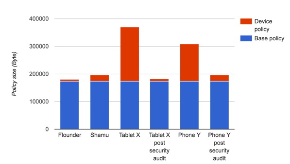

The Android Open Source Project (AOSP) provides a solid base policy for the applications and services that are common across all Android devices. Contributors to AOSP regularly refine this policy. The core policy is expected to make up about 90–95% of the final on-device policy with device-specific customizations making up the remaining 5–10%. This article focuses on these device-specific customizations, how to write device-specific policy, and some of the pitfalls to avoid along the way.
While writing device-specific policy, progress through the following steps in order.
When a device is in permissive mode, denials are logged but not enforced. Permissive mode is important for two reasons:
The simplest way to put a device into permissive mode is via the
kernel command line. This
can be added to the device’s BoardConfig.mk file:
platform/device/<vendor>/<target>/BoardConfig.mk.
After modifying the command line, perform make clean, then
make bootimage, and flash the new boot image.
After that, confirm permissive mode with:
adb getenforce
Two weeks is a reasonable amount of time to be in global permissive mode. After addressing the majority of denials, move back into enforcing mode and address bugs as they come in. Domains still producing denials or services still under heavy development can be temporarily put into permissive mode, but move them back to enforcing mode as soon as possible.
In enforcing mode, denials are both logged and enforced. It is a best practice to get your device into enforcing mode as early as possible. Waiting to create and enforce device-specific policy often results in a buggy product and a bad user experience. Start early enough to participate in dogfooding and ensure full test coverage of functionality in real world usage. Starting early ensures security concerns inform design decisions. Conversely, granting permissions based solely on observed denials is an unsafe approach. Use this time to perform a security audit of the device and file bugs against behavior that should not be allowed.
There are a number of good reasons to create device-specific policy from scratch on a new device, which include:
Denials generated by core services are typically addressed by file labeling. For example:
avc: denied { open } for pid=1003 comm=”mediaserver” path="/dev/kgsl-3d0”
dev="tmpfs" scontext=u:r:mediaserver:s0 tcontext=u:object_r:device:s0
tclass=chr_file permissive=1
avc: denied { read write } for pid=1003 name="kgsl-3d0" dev="tmpfs"
scontext=u:r:mediaserver:s0
tcontext=u:object_r:device:s0 tclass=chr_file permissive=1
is completely addressed by properly labeling /dev/kgsl-3d0. In
this example, tcontext is device. This represents a
default context where everything in /dev receives the
“
device” label unless a more specific label is assigned. Simply accepting
the output from audit2allow here
would result in an incorrect and overly permissive rule.
To solve this kind of problem, give the file a more specific label, which in this case is gpu_device. No further permissions are needed as the mediaserver already has necessary permissions in core policy to access the gpu_device.
Other device-specific files that should be labeled with types predefined in core policy:
In general, granting permissions to default labels is wrong. Many of these permissions are disallowed by neverallow rules, but even when not explicitly disallowed, best practice is to provide a specific label.
Init-launched services are required to run in their own SELinux domains. The following example puts service “foo” into its own SELinux domain and grants it permissions.
The service is launched in our device’s init.<target>.rc file as:
service foo /system/bin/foo
class core
Create the file device/<oem>/<target>/sepolicy/foo.te
with the following contents:
# foo service type foo, domain; type foo_exec, exec_type, file_type; init_daemon_domain(foo)
This is the initial template for the foo SELinux domain, to which you can add rules based on the specific operations performed by that executable.
/system/bin/fooAdd the following to device/<oem>/<target>/sepolicy/
file_contexts:
/system/bin/foo u:object_r:foo_exec:s0
This makes sure the executable is properly labeled so SELinux runs the service in the proper domain.
Use denials to determine the required permissions. The audit2allow tool provides good guidelines, but only use it to inform policy writing. Do not just copy the output.
It’s fine to troubleshoot in permissive mode, but switch back to enforcing mode as early as possible and try to remain there.
Here are a few solutions for common mistakes that happen when writing device-specific policies.
The following example rule is like locking the front door but leaving the windows open:
allow { domain -untrusted_app } scary_debug_device:chr_file rw_file_perms
The intent is clear: everyone but third-party apps may have access to the debug device.
The rule is flawed in a few of ways. The exclusion of untrusted_app
is trivial to work around because all apps may optionally run services in the
isolated_app domain. Likewise, if new domains for third-party apps
are added to AOSP, they will also have access to scary_debug_device.
The rule is overly permissive. Most domains will not benefit from having
access to this debugging tool. The rule should have been written to allow only
the domains that require access.
Debug features should not be present on production builds nor should their policy.
The simplest alternative is to only allow the debug feature when SELinux is
disabled on eng/userdebug builds, such as adb root and
adb setenforce 0.
Another safe alternative is to enclose debug permissions in a userdebug_or_eng statement.
Characterizing SEAndroid Policies in the Wild describes a concerning trend in the growth of device policy customizations. Device-specific policy should account for 5–10% of the overall policy running on a device. Customizations in the 20%+ range almost certainly contain over privileged domains and dead policy.
Unnecessarily large policy:
The following example shows two devices where the manufacturer-specific policy comprised 50% and 40% of the on-device policy. A rewrite of the policy yielded substantial security improvements with no loss in functionality, as shown below. (AOSP devices Shamu and Flounder are included for comparison.)

Figure 1. Comparison of device-specific policy size after security audit.
In both cases, the policy was dramatically reduced both in size and in number of permissions. The decrease in policy size is almost entirely due to removing unnecessary permissions, many of which were likely rules generated by audit2allow that were indiscriminately added to the policy. Dead domains were also an issue for both devices.
A dac_override denial means that the offending process is
attempting to access a file with the incorrect unix user/group/world permissions.
The proper solution is almost never to grant the dac_override permission.
Instead
change the unix permissions on the file or process. A few domains such as
init, vold, and installd genuinely need the ability to override unix file
permissions to access other processes’ files. See
Dan Walsh’s blog
for a more in-depth explanation.